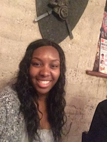

About Me
My name is Tatianna Watwood. I'm currently a medical coder at Medical Data Exchange. When I am not chasing my kids around, I spend my time reading. My goal this year is to start a new career path as a junior developer. As I continue on my path to become a developer I hope I can creat an app one day.
Connect with Me